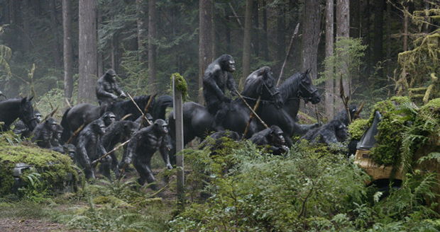
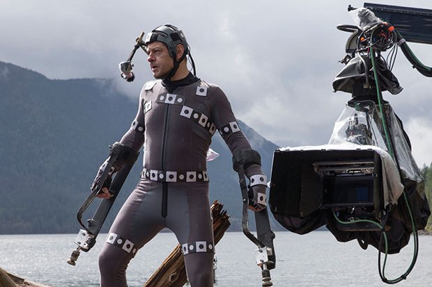
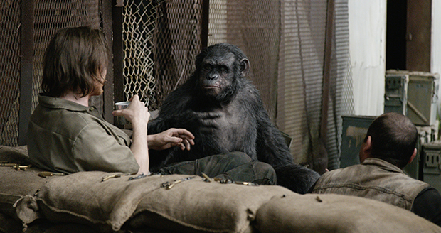

No dia 27/06 o Papricast teve a oportunidade de assistir a 20 minutos de cenas – algumas sem pós-produção – de um dos filmes mais esperados de 2014. Se os trailers já tinham feito o favor de elevar a expectativa para o novo filme da saga símia, esses 20 minutos serviram para deixar claro que Planeta dos Macacos: O Confronto é um grande candidato a melhor filme de 2014. Deixando a pompa de lado, e desistindo de tentar parecer “cool”, eu já posso adiantar que saí do cinema dando cambalhotas de felicidade.
O material exibido pela Fox começou com uma breve apresentação de Andy Serkis, ator que dá vida a César, o líder da crescente nação de macacos inteligentes que se rebelaram no final do primeiro filme da nova saga.
Para quem ainda não sabe, Planeta dos Macacos: O Confronto se passa 10 anos após o primeiro filme. A nação de macacos geneticamente modificados teve uma mãozinha da pandemia causada pelo vírus da gripe símia para poder construir com tranquilidade uma comunidade sólida e cooperativa. O vírus criado em laboratório fez com que a humanidade tivesse problemas maiores do que os macacos inteligentes e rebeldes que aprenderam a falar NÃO (e muito mais depois, mas eles começam pelo NÃO).
A exemplo do Planeta dos Macacos de 1968, que revolucionou ao apresentar macacos realistas (para a época) com um excelente trabalho de maquiagem, o Planeta dos Macacos: A Origem (2011), também revolucionou na apresentação dos símios, mas dessa vez com técnicas avançadas de captura de movimento que evoluíram ainda mais para esse segundo filme. Parte do material exibido pela Fox mostrava o comparativo das cenas captadas com os atores e o resultado final. O bom e velho antes e depois, deixando claro que as expressões, movimentos (com a ajuda de próteses como extensão dos braços) e comportamento dos macacos são resultado do trabalho de atores competentes que levaram a sério a história do #somostodosmacacos. Claro, é a pós-produção que é responsável por transformar aqueles humanos malucos, com roupas cinzas e pequenos sensores de movimentos espalhados pelo rosto, em macacos. Mas, ainda assim, o trabalho de Andy Serkis e cia é de explodir a cabeça e digno de reconhecimento pela Academia de Hollywood. Se eles não começarem a considerar o trabalho de captura de movimentos merecedor de indicações para prêmios de atuação, em breve terão que criar uma nova categoria no Oscar.
Tecnicamente o espetáculo está garantido e certamente já vale o ingresso. Mas, e quanto a história? As poucas cenas mostradas levam a crer que o filme trará uma história sobre intolerância, tanto por parte dos humanos, quanto dos macacos que buscam o conflito. No caso dos símios, é seguro afirmar que essa intolerância é herança da raça humana, ou seja, nada além do nosso karma batendo de volta. Pesa muito também a ignorância do humano médio naquele universo, que culpa com veemência os macacos por espalharem o vírus que praticamente exterminou a raça humana. A galera do “deixa disso” terá que trabalhar duro para evitar que o “confronto”, presente no título nacional do filme, não tome proporções maiores do que um simples confronto regional entre grupos de espécies diferentes, lutando por sua sobrevivência em São Francisco. Já o título da saga, mostra qual é a aposta mais segura nessa briga.
De brinde, no final dos 20 minutos, foi exibido um trailer com o final estendido, mostrando mais da cena na qual o macaco psycho chega fazendo macaquices para os dois soldados e depois mostra o que realmente pretende com aquilo tudo.
Planeta dos Macacos: o Confronto chega aos cinemas no dia 24 de julho, com direção de Matt Reeves. Além de Andy Serkis como o macaco César, o filme também conta com Gary Oldman, interpretando Dreyfus, o líder da resistência humana, e Jason Clarke, que será Malcolm o pai de família que tentará estabelecer a paz entre as duas raças.